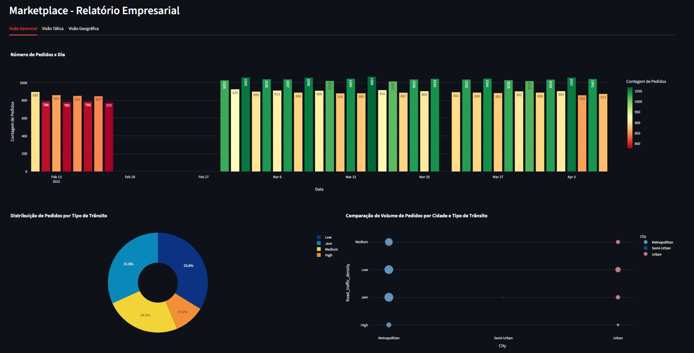
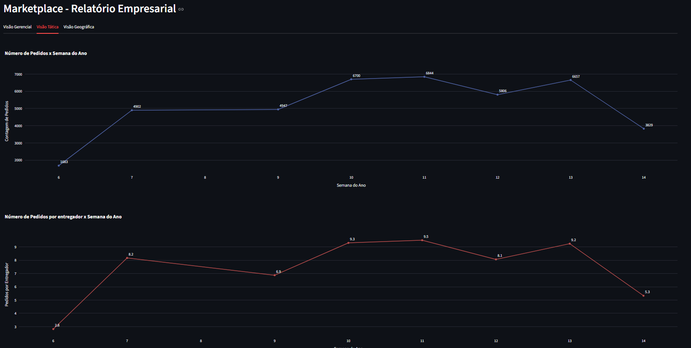
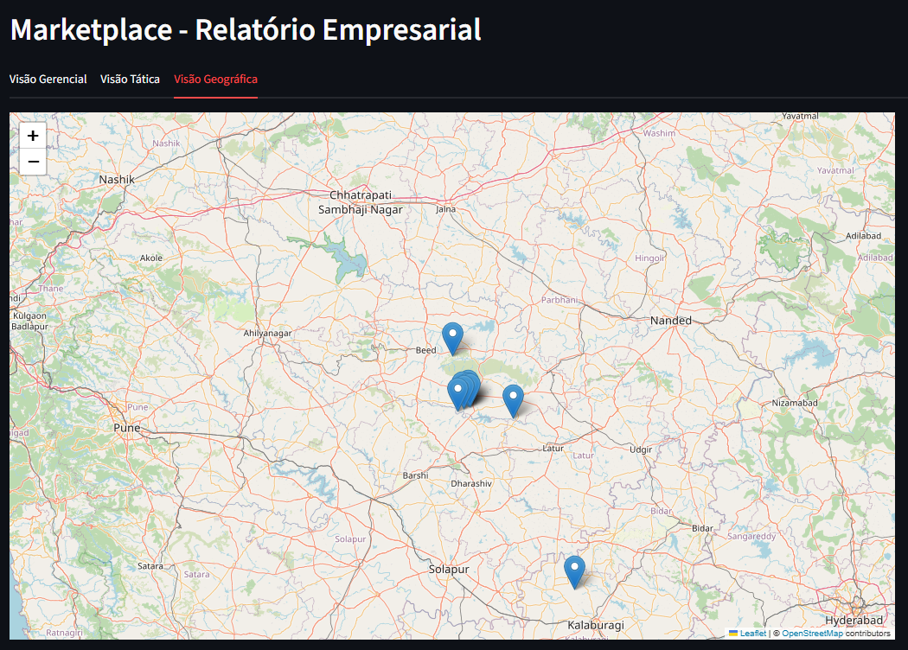
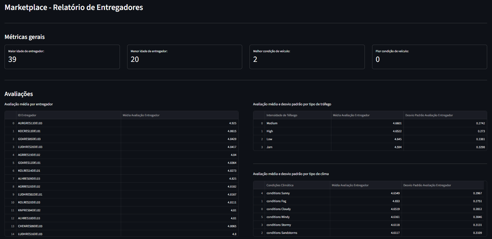
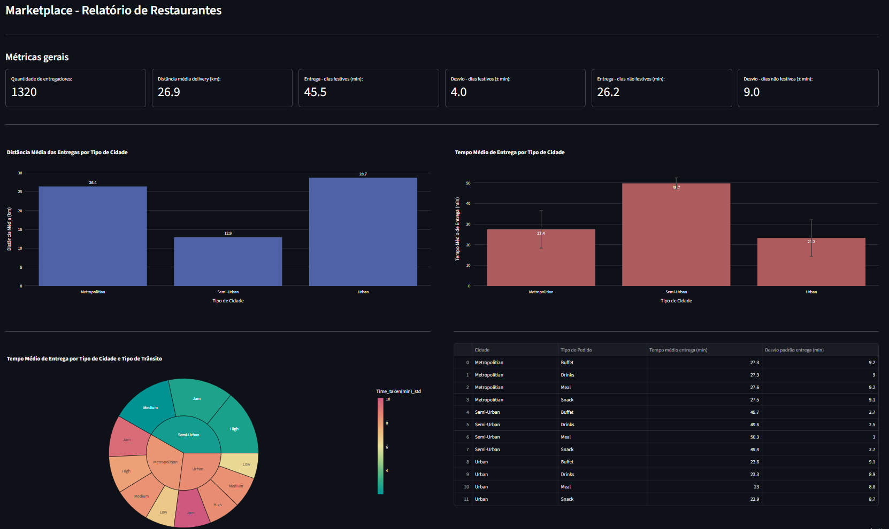

- Volume total de pedidos
- Tendências temporais (diário/semanal)
- Distribuição geográfica
- Análise de tráfego urbano
Métricas da Empresa:

O relatório contempla a quantidade de pedidos por dia e por semana, a distribuição de pedidos por tipo de tráfego e a comparação do volume de pedidos por cidade e tipo de tráfego.

Esta página contém análise de pedidos por entregador por semana.

Esta página contém um mapa interativo com localização central por cidade e tipo de tráfego.
Métricas dos Entregadores:

A análise resume faixa etária dos entregadores, condição dos veículos, avaliações médias, variações por tráfego e clima e o ranking dos 10 mais rápidos e lentos por cidade.
Métricas dos Restaurante:

A análise inclui número de entregadores, distâncias médias, tempos de entrega por cidade, comparação entre dias festivos e comuns e detalhamento por tipo de pedido..